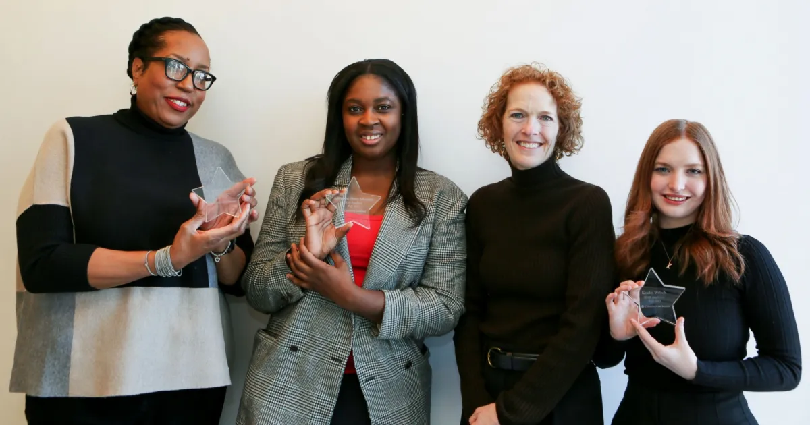

About me.
I am a J.D. candidate at Brooklyn Law School, Class of 2028, with interests in litigation, legal writing, and complex commercial disputes.
Background
Before beginning law school, I spent four years at Columbia Law School, working with faculty and academic programs in constitutional law and governance. My experience in higher education gave me the opportunity to work closely with legal scholars and helped shape my decision to pursue a legal career.
I graduated from the University of Notre Dame with a Master of Nonprofit Administration and from the University of Southern California with a bachelor's degree in Political Science.
Outside of law school and work, I enjoy crochet, cooking, exploring New York City, and finding new creative projects to take on.
Education
Brooklyn Law School
Juris Doctor Candidate, Class of 2028
University of Notre Dame
Master of Nonprofit Administration
University of Southern California
B.A., Political Science
Awards & Recognition
Carswell Scholarship
Merit Scholarship
Samuel J. Raiff Scholarship
Merit Scholarship
Edward V. Sparer Public Interest Law Fellowship
Staff Appreciation and Recognition (STAR)
Recognizes colleagues who demonstrate a commitment to innovation, leadership, and citizenship.
STAR Recognition
Staff Appreciation and Recognition provides an opportunity for the Columbia community to recognize colleagues for innovation, leadership, and citizenship.

Nonprofit Administration Merit Fellow
Class of 2020
I graduated from the University of Notre Dame with a Master of Nonprofit Administration in 2020.
View original feature →
Semi-Finalist, English Teaching Assistant Program
Ukraine
Scales Merit Scholar
Lesher Family Political Science Scholar
Merit Scholarship